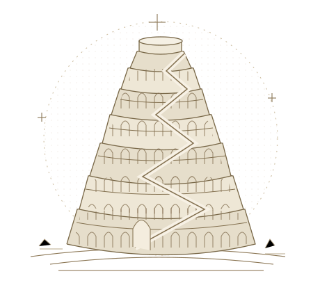

CLASSICS · TRANSLATION · READING
在语言的分岔处，
与古典相遇。
一座以翻译为桥的私人图书馆。
收藏古典文本，梳理阅读线索，让久远的声音
在今天的语言中再次被听见。
古典学与宗教文献 · 在线阅读与 EPUB 收藏
EX LIBRIS 藏书之所

教父作品✧荷马学✧古代注疏✧古典修辞学
THE COLLECTION
馆藏目录
沿着一部作品，开启一段阅读。
馆藏 EPUB 已收录 · 译者、底本与修订信息将持续补充。
A NOTE FROM THE LIBRARY
以翻译，
连接散落的语言。
Et idcirco vocatum est nomen eius Babel, quia ibi confusum est labium universae terrae…
因此，这城被称为巴别，因为全地的语言在那里被混淆了……
《创世记》11:9 · 武加大译本节选
中文为据拉丁文所译
巴别塔图书馆是一项个人翻译与阅读计划。它借用巴别塔的名字，希望通过翻译与注释，使散落在不同语言和时代中的文字，在中文中获得新的读者。
本馆计划逐步译介部分教父著作、以《伊利亚特》为代表的古希腊作品、古代注疏，以及古典修辞学、格律学文献与其他古典作品。每部译作将尽可能注明底本，保留篇章、节号或行号，并附译注与修订记录。
译文将在持续阅读与校订中逐步完善，也欢迎读者提出订正与讨论。愿这座小小的图书馆，为古典文字与今天的读者留下一处相遇之所。